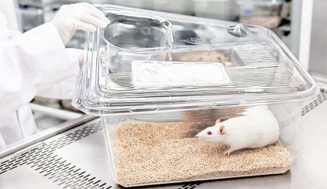

Le voyant lumineux passe au vert, la porte est déverrouillée, je rentre. Première étape : l’inscription sur le registre, puis les gants en latex et la blouse. Une deuxième porte mène à la salle d’expérimentation où se trouvent les souris. En entrant, j’allume la lumière et j’entends les souris soudainement dérangées se mouvoir et lâcher de petits cris, d’angoisse je suppose. Elles sont chacune dans de petites boites, grandes comme cinq fois leur taille, avec un peu de sciure de bois au fond faisant office de litière. Il y a un peu moins d’une soixantaine de cages accolées au mur. Fort de ma blouse et de mes gants, je m’installe au bureau disposé en face des souris et m’informe de la procédure à suivre en ce premier jour de semaine.

L’idée de ce protocole de stress léger chronique imprévisible, c’est de rendre les souris dépressives en leur infligeant un stress doux mais continu et déroutant sur une période de 9 semaines. Par dépressive , comprenez que les souris développent des symptômes mimant ceux d’un être humain dépressif. Par exemple, si on dispose un petit morceau de gâteau et une souris dans la même cage, la souris devrait rapidement se diriger vers la friandise pour la dévorer. Ce temps sera largement augmenté si la souris a développé les symptômes mimant la dépression humaine. Un autre exemple est celui du comportement de toilettage. On asperge l’animal d’un liquide sucré et collant, l’animal se nettoiera après un laps de temps plus long s’il est dépressif . Ces symptômes rappellent ceux de l’anhédonie (incapacité à ressentir des émotions positives) et de l’apathie (absence d’énergie, mollesse) chez l’être humain.
Aujourd’hui, c’est lundi, jour du stress social. Je sors chaque souris de sa cage et l’installe dans la cage de sa voisine. Les 56 souris utilisées sont des mâles très jeunes (le plus âgé a 16 semaines). Si le territoire est un aspect important dans la vie d’une souris à l’état sauvage, ces souris nées en laboratoire sont tout aussi sensibles au fait de se retrouver dans une petite cage contenant les poils, l’urine et les fèces d’une congénère inconnue. En tant qu’expérimentateur, c’est assez flagrant de voir le stress généré sur chacune d’entre elle. Une fois chaque souris déplacée dans la cage de sa voisine, je sors de la pièce en éteignant la lumière. Quelques cafés plus tard, me revoilà fraichement vêtu d’une nouvelle paire de gants et de ma blouse. Cette fois, je vais incliner toutes les cages de 45 degrés, les souris se retrouvent presque à la verticale dans leur petite cage. Deux heures se sont écoulées. Je monte remettre un sol droit à mes souris, signe le registre et rentre chez moi. Comme le cycle jour/nuit est artificiellement inversé afin de déranger les animaux pendant leur sommeil lors de l’application du protocole de stress chronique, les souris vont passer une journée dans leur petite cage sans être dérangées pendant que je ferais ma nuit au chaud dans mon lit.
Le lendemain, je rentre dans le labo adressant un bonjour chaleureux aux souris. Ce matin, c’est le stress du bain. J’enlève la sciure et verse un demi verre d’eau dans chaque cage puis laisse les souris patauger pendant une petite demi-heure avant de les remettre dans une cage avec de la sciure fraîche. L’après-midi, je reviens par deux fois, d’abord pour ajouter des crottes de rats dans leur litière pendant une heure ou deux, puis pour déplacer, comme hier, chaque souris dans la cage de sa voisine.
Le jour suivant, mercredi, je verse un demi verre d’eau sur la litière de chaque souris, après la pataugeoire, c’est l’heure de la gadoue. Je ne remets de la sciure sèche et fraîche que quelques heures plus tard. Ah, et une souris est morte. Elle n’a pas supporté le protocole. Je note son matricule sur le registre et la dépose emballée dans un sac plastique dans le congélateur du labo. L’après-midi, on programme l’extinction et l’allumage de la lumière par période de deux heures pour perturber leur cycle de sommeil.
Jeudi matin, l’application du stress nécessite une manipulation délicate des souris. L’une après l’autre, je vais les insérer dans un cylindre (aéré) à peine plus grand qu’elles. Les souris ne pourront plus bouger pendant 15 à 30 minutes. Je ressens un peu d’effroi en les voyant prostrées de la sorte. Mais la fin est noble, c’est pour la science . Je lis un peu en attendant que les minutes de contention passent. Je suis content de ne pas être une souris. Puis vient enfin l’heure de la remise en liberté . L’une après l’autre, je les sors de leur cylindre. Beaucoup ont uriné et déféqué outre mesure pendant ce laps de temps si court. Arrive bientôt la dernière, mais voilà qu’elle saisit avec ardeur la peau de mon doigt entre ses petites dents. Je réussis tout juste à la remettre dans sa cage sans la faire tomber. C’est la souris NCffBax43. Elle a déjà mordu une autre expérimentatrice lors d’un test comportemental effectué au préalable. La coquine. Je rejoins mes collègues en bas avec hâte, c’est l’heure du déjeuner. Je leur raconte comment cette méchante NCffBax43 a encore fait des siennes. On rigole bien.
Arrive enfin vendredi, c’est la fin de semaine pour moi mais pas pour elles. Je vais tour à tour leur infliger le stress social, puis pencher leur cage et enlever leur litière pendant des laps de temps plus ou moins longs. Ce weekend, je ne suis pas disponible donc on programme la perturbation des cycles jour/nuit sur les deux jours. Il se trouve qu’une des personnes investies dans cette recherche doit revenir au labo dimanche matin. Elle se chargera de faire écouter des bruits de prédateurs (rapaces) aux souris pendant une dizaine de minutes. Ces souris n’ont jamais vu de tels animaux (elles sont génétiquement modifiées et sont nées en laboratoire) mais on s’aperçoit très nettement de l’effet de ces sons sur elles.
Pendant 9 semaines, le même scenario se
reproduira et quelques souris succomberont à la procédure de
stress. Pas NCffBax43 qui, elle, semble s’accrocher à la vie
autant qu’à nos doigts. À 3 semaines de protocole, les souris
recevront une injection d’un produit qui augmentera (ou non pour la
moitié d’entre elles, en fonction de leur modification génétique)
le nombre de nouveaux neurones dans certaines zones de leur petit
cerveau.
En fait, c’est notre hypothèse de départ :
l’augmentation du nombre de nouveaux neurones permet-elle de
compenser les effets du stress
. Une fois le protocole de stress
appliqué, on testera le comportement des souris pour évaluer la
sévérité de leur
dépression
. Toute une batterie d’autres
critères rappelant les effets de la pathologie sur l’être humain
seront également mesurés incluant notamment le poids et l’état
du pelage. Suite à quoi, leur cerveau sera extrait et analysé afin
de confirmer ou non l’augmentation du nombre de nouveaux neurones.
On s’attend à ce que les souris ayant un plus grand nombre de
nouveaux neurones soient plus résilientes aux effets du stress.
Voilà, c’est fait. Les souris sont mortes, étêtées, âgées d’un peu plus d’une vingtaine de semaines. Combien de temps une souris peut vivre normalement ? Deux ans, je crois. Est-ce qu’elles souffrent ? Oui certainement, mais l’être humain dépressif souffre aussi. Et puis, ce ne sont que quelques souris après tout. Est-ce que la souris se rend compte de ses conditions d’exploitation ? Je ne sais pas. Je ne connais pas grand-chose aux souris. On n’en parle pas en cours, ni au labo d’ailleurs. On parle de la souris objet : de son prix, des mutations génétiques disponibles, des entreprises la fournissant, de la taille des cages, de ce qu’il est légal ou non de faire subir à ces petites, etc. Mais pas de la souris animale, vivante, libre . Est-ce que la recherche vaut la souffrance et la mort de ces souris ? Eh, tu ne vas pas te la jouer sentimental. On dirait presque que tu t’opposes à l’avancée de la science. N’y a-t-il aucun conflit d’intérêt sous-jacent ? C’est certain que les fournisseurs de souris transgéniques y gagnent à laisser expérimenter sur leurs marchandises , et ça crée des emplois. Pour les chercheurs.es, leur vie professionnelle ne dépend-elle pas de l’expérimentation animale ? N’existe-t-il vraiment aucune alternative ? Peut-on arracher des vies pour (hypothétiquement) en améliorer d’autres ? J’ai Rabelais dans la tête, science sans conscience n’est que ruine de l’âme . Pourtant, il me semble que l’on ne tombe en ruine qu’après la prise de conscience. Arrête avec tes réflexions débiles. On travaille pour l’avancée du savoir. C’est une cause noble. De toutes façons, on a nos données. On va pouvoir publier les résultats. Finalement, après analyses, il se trouve que les résultats ne sont pas vraiment convaincants. Il n’y aura pas de publication scientifique cette fois. Peu importe, j’ai mon mémoire, je valide mon semestre. Ma carrière avance. Quand même, NCffBax43, quelle coquine.
Epilogue : ce n’est que quelques années plus tard en 2017 que l’équipe, après avoir mené cette recherche une seconde fois, publiera un article confirmant l’hypothèse. Cette recherche a été validée par un comité d’éthique. C’est un comité comprenant des chercheurs.es venant de disciplines différentes validant ou non un protocole en fonction de critères éthiques. Un chercheur me dit un jour : “on a bien essayé d’inclure un.e défenseur.se des droits des animaux au sein de ces comités, mais ces derniers.es ne considèrent presque aucune recherche comme éthique.” A l’époque, je suis sorti de cette entretien avec l’idée que ces défenseurs des animaux étaient des extrémistes, préférant l’animal à l’homme, trop sensibles et surtout incapables de comprendre l’importance supérieure de nos travaux sur la vie de ces quelques bestioles.
J’ai bien changé.